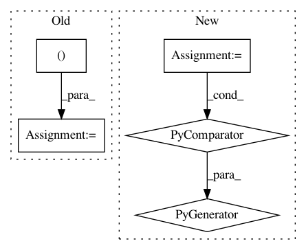

a41f2ff4c1437f0b61e76265c31bdec71be0556f,softlearning/algorithms/sac.py,SAC,get_diagnostics,#SAC#Any#Any#Any#Any#,358
Before Change
feed_dict = self._get_feed_dict(iteration, batch)
(Q_values, Q_losses, policy_losses, alpha, global_step) = (
self._session.run(
(self._Q_values,
self._Q_losses,
self._policy_losses,
self._alpha,
self.global_step),
feed_dict))
diagnostics = OrderedDict({
"Q-avg": np.mean(Q_values),
"Q-std": np.std(Q_values),
After Change
feed_dict = self._get_feed_dict(iteration, batch)
diagnostics = self._session.run(self._diagnostics_ops, feed_dict)
diagnostics.update(OrderedDict([
(f"policy/{key}", value)
for key, value in
self._policy.get_diagnostics(batch["observations"]).items()
]))
In pattern: SUPERPATTERN
Frequency: 4
Non-data size: 5
Instances
Project Name: rail-berkeley/softlearning
Commit Name: a41f2ff4c1437f0b61e76265c31bdec71be0556f
Time: 2019-04-26
Author: hartikainen@berkeley.edu
File Name: softlearning/algorithms/sac.py
Class Name: SAC
Method Name: get_diagnostics
Project Name: rail-berkeley/softlearning
Commit Name: 7856d22b09561e33522bdc0bd00218ae75b84bd7
Time: 2018-09-09
Author: kristian.hartikainen@gmail.com
File Name: examples/mujoco_all_sac.py
Class Name:
Method Name: run_experiment
Project Name: rail-berkeley/softlearning
Commit Name: 5c6c420783b95425cef7648a589785d3ab668b5c
Time: 2018-05-22
Author: kristian.hartikainen@gmail.com
File Name: examples/mujoco_all_sac_lsp.py
Class Name:
Method Name:
Project Name: rail-berkeley/softlearning
Commit Name: 7856d22b09561e33522bdc0bd00218ae75b84bd7
Time: 2018-09-09
Author: kristian.hartikainen@gmail.com
File Name: examples/mujoco_all_ray.py
Class Name:
Method Name: run_experiment